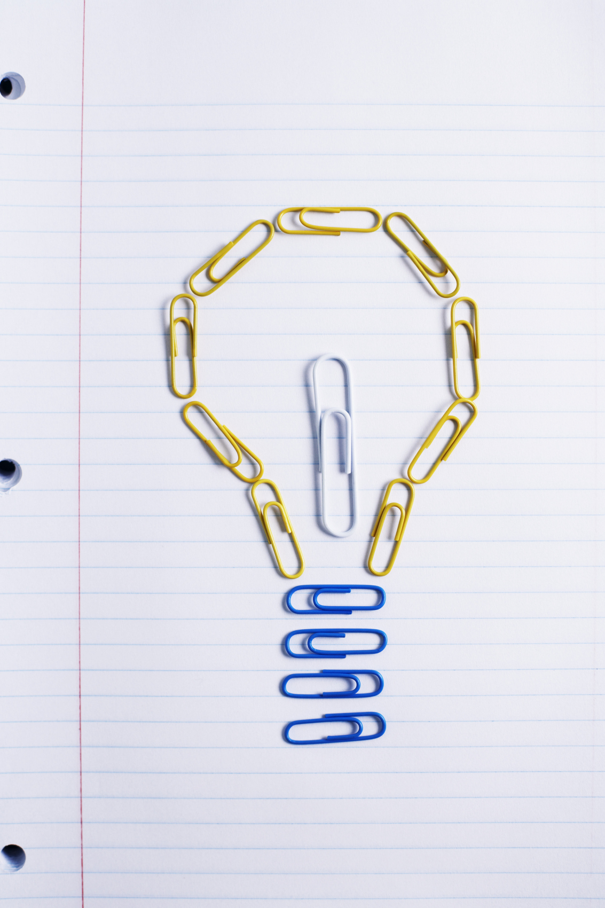

The Imagery of the Piece Knight and Its Philosophical Implications in The Queen's Gambit
Research Objectives
To explore how the "knight" serves as a symbolic vehicle for Beth's
intellectual growth and self-awareness in the novel.
To analyze the philosophical themes embodied by the knight's rules and
imagery, such as reason vs. intuition, freedom vs. constraint, and
order vs. chaos.
Research Questions
How does the knight's movement reflect Beth's thinking patterns and
her process of overcoming limitations in both chess and life?
How does Beth's use of the knight demonstrate the coexistence of
reason and intuition, and what philosophical insights does this
coexistence offer into human cognition?

The Imagery of the Piece Knight and Its Philosophical Implications in The Queen's Gambit
Research Methods
Close reading and imagery analysis:
Examining scenes involving the knight and their connection to
Beth's psychological and behavioral development.
Application of philosophical frameworks:
Using theories to interpret the philosophical implications of the
knight imagery.
Research Outcomes
Jixi Gu, The imagery of the piece knight and its philosophical
implications in The Queen's Gambit. International Journal of Social
Science and Human Research, September 2025, Vol.08, No.09,
pp.6476-6479. (
PDF,
DOI,
Certificate of Publication )